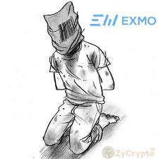

Když si nastoupil zjistil si, že tento bus je skoro plný, takže sis neměl kam sednout.
Nakonec tě začalo bolet břicho. Nejspíš z těch toustů, proto si zaspeedrunoval na záchod.
Po nějaké době bus zastavil, po deseti sekundách si slyšel křik a Arabsky znějící jazyk.
Když si vyšel, abys zjistil o co jde. Ze zadu tě někdo omráčil...
Když ses vzbudil byl si svázán v nějakém sklepě i s ostatními cestujícími. Nejspíš tě zajala Al-Qaeda.

Zpět na začátek